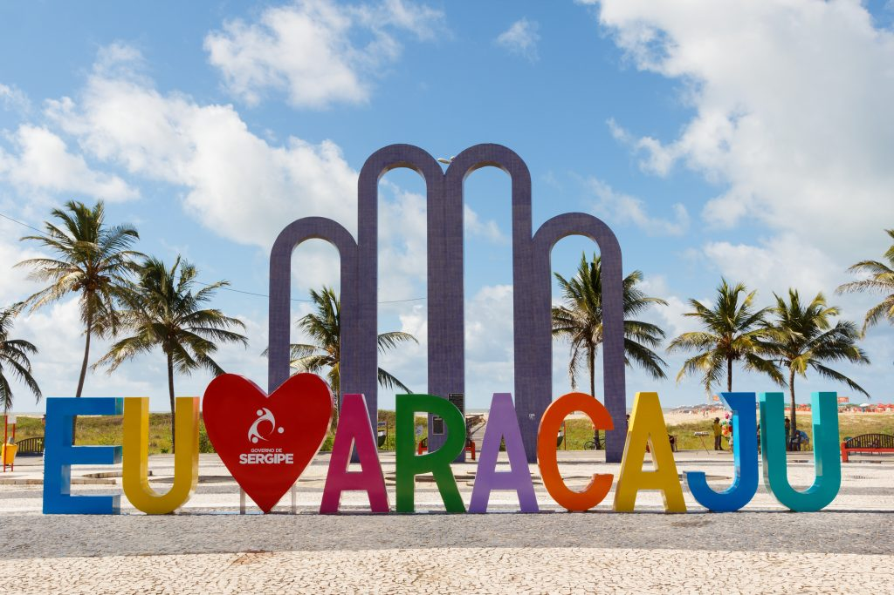

Conheça Aracaju

Aracaju-SE
Capital do menor estado brasileiro, Sergipe, Aracaju reúne atrativos para todos os gostos. Afinal, ali dá para se esbanjar na deliciosa gastronomia, curtir belas praias e conhecer de pertinho seu artesanato, bastante tradicional. Se você ainda não teve a chance de visitar o destino, não faz ideia do que está perdendo.
Agroturismo
Aventura
Parques
Praias